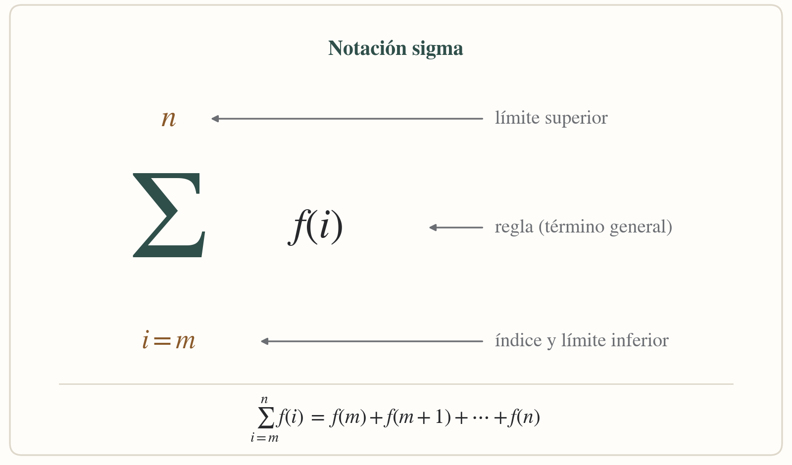
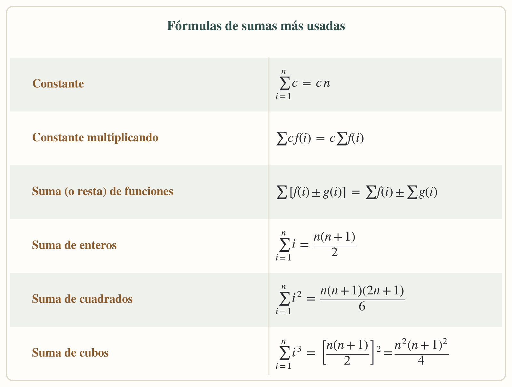
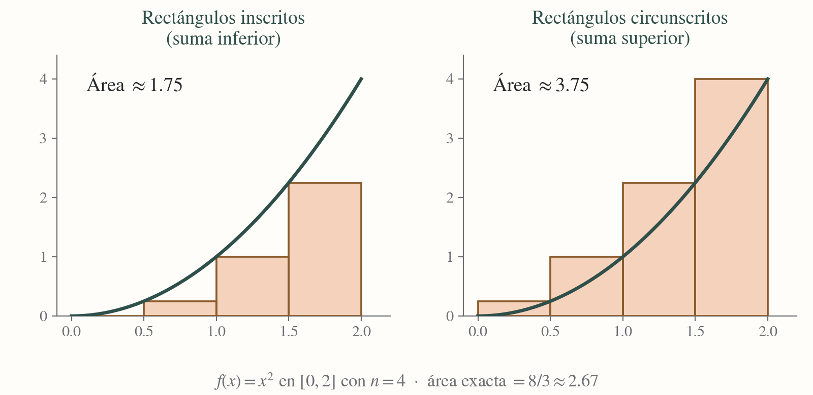
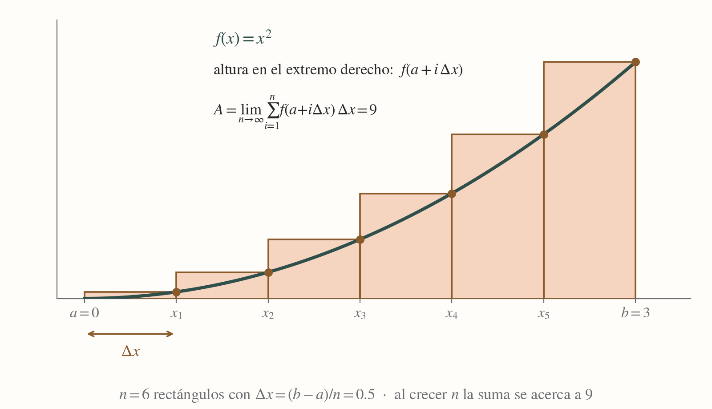
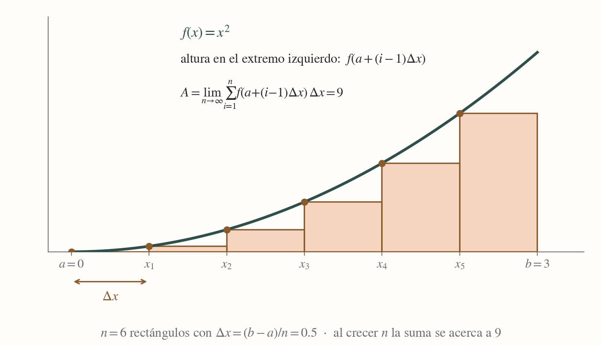
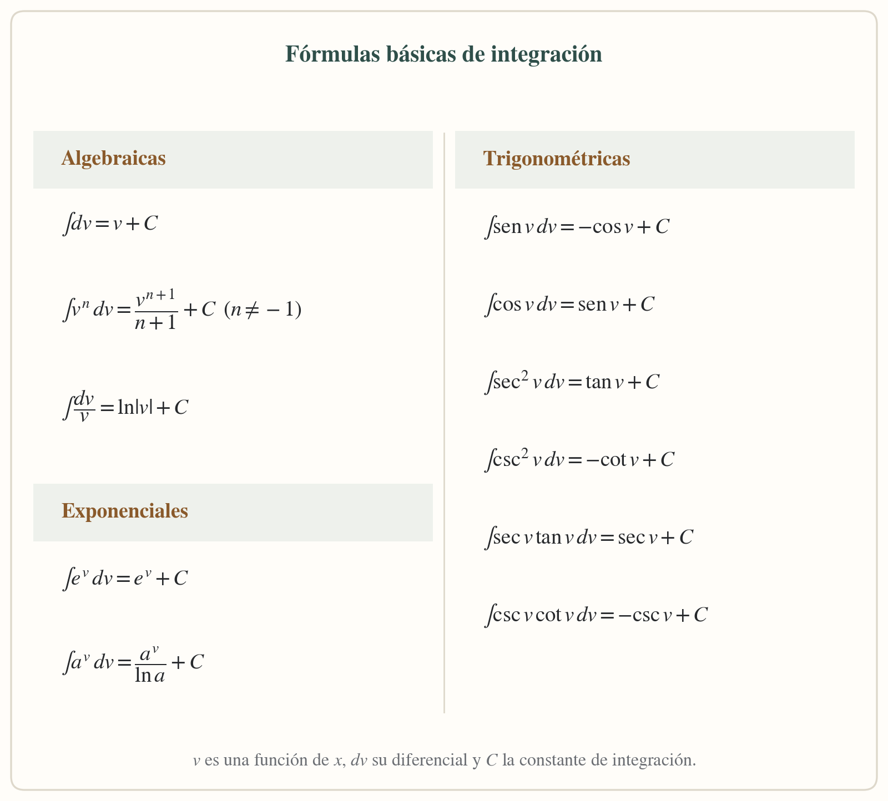
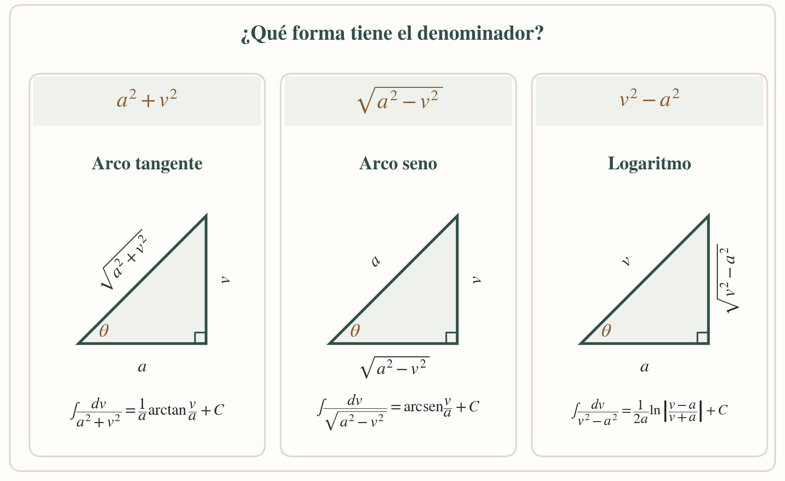
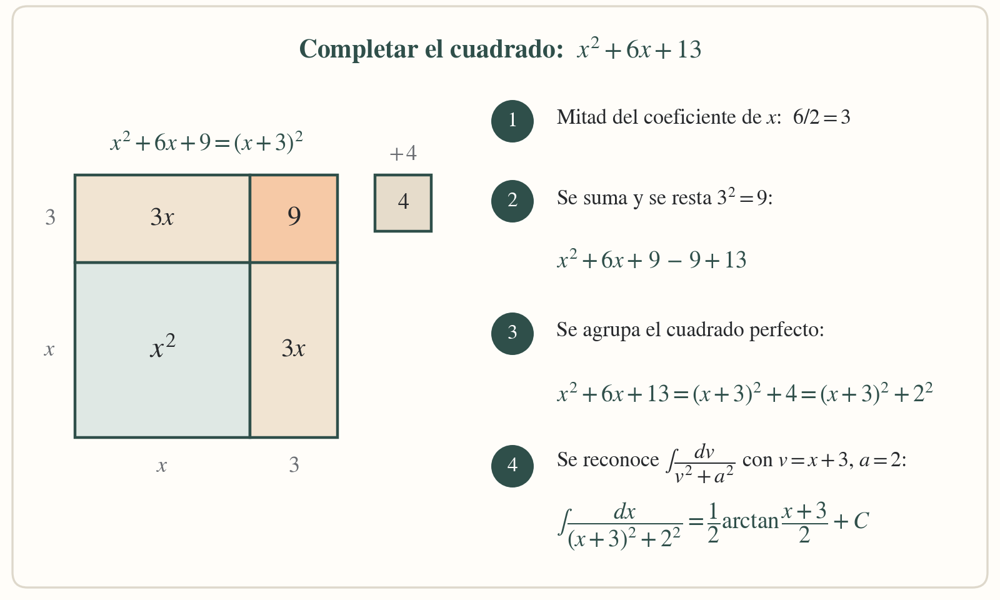

Unidad 1 · Ejercicios 1 al 7
Sumas e integrales inmediatas
Notación sigma, sumas de Riemann, fórmulas básicas de integración, cambio de variable y las formas que producen arco tangente, arco seno o logaritmo.
Definición y propiedades
La notación sigma abrevia una suma de términos que siguen una misma regla. Se lee: “suma de f(i) desde i = m hasta n”.

Ejercicio 1.1 · Sumas por desarrollo
Calcula el valor de cada suma escribiendo sus términos.
Ejemplo 1
Σi=14 i²
- Se sustituye i = 1, 2, 3, 4 en la expresión i².
- Se escribe cada término: 1² + 2² + 3² + 4².
- Se calcula: 1 + 4 + 9 + 16.
Resultado: 30
Ejemplo 2
Σk=15 (2k + 1)
- Se evalúa la expresión para k = 1, …, 5.
- Los valores son 3, 5, 7, 9 y 11.
- Se suman: 3 + 5 + 7 + 9 + 11.
Resultado: 35
Ejemplo 3
Σi=36 i (el índice no empieza en 1)
- El índice inicia en 3, así que los términos son i = 3, 4, 5, 6.
- Se suman: 3 + 4 + 5 + 6.
Resultado: 18
Ejemplo 4
Σi=14 1/i
- Se escriben los términos: 1 + 1/2 + 1/3 + 1/4.
- Denominador común 12: 12/12 + 6/12 + 4/12 + 3/12.
- Se suman los numeradores: 25/12.
Resultado: 25/12
Ejemplo 5
Σn=03 2n
- El índice empieza en 0: 2⁰, 2¹, 2², 2³.
- Los valores son 1, 2, 4 y 8.
- Se suman: 1 + 2 + 4 + 8.
Resultado: 15
Ejercicio 1.2 · Sumas con propiedades
Estas reglas y fórmulas evitan sumar término por término.

Ejemplo 1
Σi=110 5
- Es la suma de una constante: Σ c = c n.
- Aquí c = 5 y n = 10.
- Se multiplica: 5 · 10.
Resultado: 50
Ejemplo 2
Σi=120 i
- Se usa Σ i = n(n+1)/2 con n = 20.
- Se sustituye: 20 · 21 / 2.
- Se calcula: 420 / 2.
Resultado: 210
Ejemplo 3
Σi=110 (3i + 2)
- Se separa la suma: 3 Σ i + Σ 2.
- Σ i = 10 · 11 / 2 = 55 y Σ 2 = 2 · 10 = 20.
- Se sustituye: 3 · 55 + 20 = 165 + 20.
Resultado: 185
Ejemplo 4
Σi=16 i²
- Se usa Σ i² = n(n+1)(2n+1)/6 con n = 6.
- Se sustituye: 6 · 7 · 13 / 6.
- Se simplifica el 6: 7 · 13.
Resultado: 91
Ejemplo 5
Σi=15 (i² − 2i)
- Se separa: Σ i² − 2 Σ i.
- Con n = 5: Σ i² = 5·6·11/6 = 55 y Σ i = 15.
- Se resta: 55 − 2 · 15 = 55 − 30.
Resultado: 25
Suma de Riemann
El área bajo una curva se aproxima con rectángulos de base Δx = (b − a)/n. Los inscritos (sumas inferiores) quedan por debajo de la curva y los circunscritos (sumas superiores) por encima; al aumentar n ambas aproximaciones se acercan al área real.

Ejercicio 2.1 · Aproximación con n rectángulos
Con un número fijo de rectángulos se obtiene una cota inferior y una superior del área.
Ejemplo 1
Aproxima el área bajo f(x) = x² en [0, 2] con n = 4 rectángulos inscritos.
- Δx = (2 − 0)/4 = 0.5.
- Como f crece, los inscritos usan el extremo izquierdo: x = 0, 0.5, 1, 1.5.
- Alturas: 0, 0.25, 1, 2.25; su suma es 3.5.
- Área ≈ 3.5 · 0.5.
Resultado: 1.75
Ejemplo 2
Con la misma función y el mismo intervalo, usa rectángulos circunscritos.
- Δx = 0.5 y se usa el extremo derecho: x = 0.5, 1, 1.5, 2.
- Alturas: 0.25, 1, 2.25, 4; su suma es 7.5.
- Área ≈ 7.5 · 0.5.
Resultado: 3.75 (el valor exacto, 8/3 ≈ 2.67, queda entre 1.75 y 3.75)
Ejemplo 3
Para f(x) = x en [0, 4] con n = 4, calcula el área inscrita y la circunscrita.
- Δx = 1.
- Inscritos: alturas 0, 1, 2, 3 → suma 6 → área 6 · 1 = 6.
- Circunscritos: alturas 1, 2, 3, 4 → suma 10 → área 10 · 1 = 10.
Resultado: 6 ≤ área ≤ 10 (el área real del triángulo es 8)
Ejemplo 4
Para f(x) = 2x + 1 en [1, 3] con n = 4, calcula ambas aproximaciones.
- Δx = 2/4 = 0.5.
- Inscritos: x = 1, 1.5, 2, 2.5 → alturas 3, 4, 5, 6 → 18 · 0.5 = 9.
- Circunscritos: x = 1.5, 2, 2.5, 3 → alturas 4, 5, 6, 7 → 22 · 0.5 = 11.
Resultado: 9 ≤ área ≤ 11 (el área exacta es 10)
Ejemplo 5
Para f(x) = x² + 1 en [0, 2] con n = 4, calcula el área inscrita y la circunscrita.
- Δx = 0.5.
- Inscritos: x = 0, 0.5, 1, 1.5 → alturas 1, 1.25, 2, 3.25 → suma 7.5 → área 3.75.
- Circunscritos: x = 0.5, 1, 1.5, 2 → alturas 1.25, 2, 3.25, 5 → suma 11.5 → área 5.75.
Resultado: 3.75 ≤ área ≤ 5.75 (el área exacta es 14/3 ≈ 4.67)
Ejercicio 2.2 · Área con sumas superiores
Fórmulas útiles: Σ 1 = n; Σ i = n(n+1)/2; Σ i² = n(n+1)(2n+1)/6; Σ i³ = n²(n+1)²/4.

Ejemplo 1
Con sumas superiores, halla el área bajo f(x) = 4x + 5 en [2, 5].
- Δx = (5 − 2)/n = 3/n, y a + iΔx = 2 + 3i/n.
- f(a+iΔx) = 4(2 + 3i/n) + 5 = 13 + 12i/n.
- A = límn→∞ Σ (13 + 12i/n)(3/n) = límn→∞ [ (39/n) Σ 1 + (36/n²) Σ i ].
- Con Σ 1 = n y Σ i = n(n+1)/2: A = límn→∞ [ 39 + 18(n+1)/n ].
- Cuando n → ∞, (n+1)/n → 1, así que A = 39 + 18.
Resultado: A = 57 u²
Ejemplo 2
Halla el área bajo f(x) = x² en [0, 3] con sumas superiores.
- Δx = 3/n y a + iΔx = 3i/n.
- f(3i/n) = 9i²/n².
- A = límn→∞ Σ (9i²/n²)(3/n) = límn→∞ (27/n³) Σ i².
- Con Σ i² = n(n+1)(2n+1)/6: A = límn→∞ 27(n+1)(2n+1)/(6n²).
- El cociente tiende a 2/6, luego A = 27 · 2/6.
Resultado: A = 9 u²
Ejemplo 3
Halla el área bajo f(x) = x² + 1 en [0, 2] con sumas superiores.
- Δx = 2/n y a + iΔx = 2i/n.
- f(2i/n) = 4i²/n² + 1.
- A = límn→∞ [ (8/n³) Σ i² + (2/n) Σ 1 ].
- Se sustituyen las fórmulas: A = límn→∞ [ 8(n+1)(2n+1)/(6n²) + 2 ].
- El primer término tiende a 16/6 = 8/3, luego A = 8/3 + 2.
Resultado: A = 14/3 u²
Ejemplo 4
Halla el área bajo f(x) = 3x en [0, 2] con sumas superiores.
- Δx = 2/n y a + iΔx = 2i/n.
- f(2i/n) = 6i/n.
- A = límn→∞ Σ (6i/n)(2/n) = límn→∞ (12/n²) Σ i.
- Con Σ i = n(n+1)/2: A = límn→∞ 6(n+1)/n.
- Cuando n → ∞, el cociente tiende a 1.
Resultado: A = 6 u²
Ejemplo 5
Halla el área bajo f(x) = x³ en [0, 1] con sumas superiores.
- Δx = 1/n y a + iΔx = i/n.
- f(i/n) = i³/n³.
- A = límn→∞ Σ (i³/n³)(1/n) = límn→∞ (1/n⁴) Σ i³.
- Con Σ i³ = n²(n+1)²/4: A = límn→∞ (n+1)²/(4n²).
- El cociente tiende a 1/4.
Resultado: A = 1/4 u²
Ejercicio 2.3 · Área con sumas inferiores
Ahora se evalúa en el extremo izquierdo de cada subintervalo, por eso aparecen sumas de (i−1): Σ (i−1) = n(n−1)/2, Σ (i−1)² = (n−1)n(2n−1)/6, Σ (i−1)³ = (n−1)²n²/4.

Ejemplo 1
Con sumas inferiores, halla el área bajo f(x) = x² en [0, 3].
- Δx = 3/n y a + (i−1)Δx = 3(i−1)/n.
- f = 9(i−1)²/n².
- A = límn→∞ (27/n³) Σ (i−1)².
- Con Σ (i−1)² = (n−1)n(2n−1)/6: A = límn→∞ 27(n−1)(2n−1)/(6n²).
- El cociente tiende a 2/6, luego A = 27 · 2/6.
Resultado: A = 9 u² (igual que con sumas superiores)
Ejemplo 2
Halla el área bajo f(x) = 2x + 1 en [0, 3] con sumas inferiores.
- Δx = 3/n y a + (i−1)Δx = 3(i−1)/n.
- f = 6(i−1)/n + 1.
- A = límn→∞ [ (18/n²) Σ (i−1) + (3/n) Σ 1 ].
- Con Σ (i−1) = n(n−1)/2: A = límn→∞ [ 9(n−1)/n + 3 ].
- Cuando n → ∞: A = 9 + 3.
Resultado: A = 12 u²
Ejemplo 3
Halla el área bajo f(x) = x³ en [0, 2] con sumas inferiores.
- Δx = 2/n y a + (i−1)Δx = 2(i−1)/n.
- f = 8(i−1)³/n³.
- A = límn→∞ (16/n⁴) Σ (i−1)³.
- Con Σ (i−1)³ = (n−1)²n²/4: A = límn→∞ 4(n−1)²/n².
- El cociente tiende a 1, luego A = 4.
Resultado: A = 4 u²
Ejemplo 4
Halla el área bajo f(x) = x + 3 en [1, 3] con sumas inferiores.
- Δx = 2/n y a + (i−1)Δx = 1 + 2(i−1)/n.
- f = 4 + 2(i−1)/n.
- A = límn→∞ [ (8/n) Σ 1 + (4/n²) Σ (i−1) ].
- Se sustituye: A = límn→∞ [ 8 + 2(n−1)/n ].
- Cuando n → ∞: A = 8 + 2.
Resultado: A = 10 u²
Ejemplo 5
Halla el área bajo f(x) = x² + 1 en [0, 3] con sumas inferiores.
- Δx = 3/n y a + (i−1)Δx = 3(i−1)/n.
- f = 9(i−1)²/n² + 1.
- A = límn→∞ [ (27/n³) Σ (i−1)² + (3/n) Σ 1 ].
- Se sustituye: A = límn→∞ [ 27(n−1)(2n−1)/(6n²) + 3 ].
- El primer término tiende a 9: A = 9 + 3.
Resultado: A = 12 u²
Integrales inmediatas por fórmula directa
Una integral es inmediata cuando coincide —o se hace coincidir mediante un cambio de variable— con alguna de las fórmulas básicas de integración. Nunca debe omitirse la constante de integración C.

Ejercicio 3 · Integrales con la fórmula de potencias
Resuelve las siguientes integrales de polinomios y potencias.
Ejemplo 1
∫ x⁵ dx
- Se aplica la fórmula de potencias: ∫ vn dv = vn+1/(n+1) + C, con n = 5.
- Se suma 1 al exponente y se divide entre el nuevo exponente.
Resultado: x⁶/6 + C
Ejemplo 2
∫ (4x³ − 3x² + 2) dx
- Se integra cada término por separado (la integral de una suma es la suma de las integrales).
- ∫4x³dx = x⁴; ∫3x²dx = x³; ∫2 dx = 2x.
- Se combinan los resultados y se agrega la constante.
Resultado: x⁴ − x³ + 2x + C
Ejemplo 3
∫ √x dx
- Se escribe la raíz como potencia fraccionaria: √x = x1/2.
- Se aplica la fórmula de potencias con n = 1/2, por lo que n+1 = 3/2.
- Dividir entre 3/2 equivale a multiplicar por 2/3.
Resultado: (2/3) x3/2 + C
Ejemplo 4
∫ dx/x³
- Se escribe 1/x³ como x−3.
- Se aplica la fórmula de potencias con n = −3, por lo que n+1 = −2.
- Se divide entre −2.
Resultado: −1/(2x²) + C
Ejemplo 5
∫ (2x + 5)⁴ dx
- El integrando no es exactamente v⁴ dv, así que se propone v = 2x + 5.
- Entonces dv = 2 dx, de donde dx = dv/2.
- Se sustituye: ∫ v⁴ (dv/2) = (1/2) ∫ v⁴ dv = v⁵/10.
- Se regresa a la variable original.
Resultado: (2x + 5)⁵/10 + C
Ejercicio 4 · Integrales exponenciales
Se usan las fórmulas de exponencial, con cambio de variable cuando el exponente no es simplemente x.
Ejemplo 1
∫ e⁵ˣ dx
- Se propone v = 5x, por lo que dv = 5 dx.
- Se sustituye: (1/5) ∫ ev dv = (1/5) ev.
- Se regresa a la variable original.
Resultado: e⁵ˣ/5 + C
Ejemplo 2
∫ 3e⁻²ˣ dx
- La constante 3 sale de la integral.
- Con v = −2x, dv = −2 dx, entonces dx = −dv/2.
- 3 ∫ ev (−dv/2) = −(3/2) ev.
Resultado: −(3/2) e⁻²ˣ + C
Ejemplo 3
∫ eax+b dx (a, b constantes)
- Se propone v = ax + b, por lo que dv = a dx.
- Se sustituye: (1/a) ∫ ev dv = (1/a) ev.
Resultado: eax+b/a + C
Ejemplo 4
∫ x ex² dx
- Se propone v = x², por lo que dv = 2x dx, es decir, x dx = dv/2.
- Se sustituye: (1/2) ∫ ev dv = (1/2) ev.
Resultado: ex²/2 + C
Ejemplo 5
∫ 2³ˣ dx
- Se usa la fórmula ∫ av dv = av/ln a + C, con base a = 2.
- Con v = 3x, dv = 3 dx, entonces (1/3) ∫ 2v dv = (1/3) · 2v/ln 2.
Resultado: 2³ˣ / (3 ln 2) + C
Ejercicio 5 · Integrales trigonométricas directas
Son las que corresponden a las derivadas de las funciones trigonométricas básicas.
Ejemplo 1
∫ sen 5x dx
- Se propone v = 5x, dv = 5 dx.
- (1/5) ∫ sen v dv = (1/5)(−cos v).
Resultado: −(1/5) cos 5x + C
Ejemplo 2
∫ cos 4x dx
- Se propone v = 4x, dv = 4 dx.
- (1/4) ∫ cos v dv = (1/4) sen v.
Resultado: (1/4) sen 4x + C
Ejemplo 3
∫ x sen(x²) dx
- Se propone v = x², dv = 2x dx, por lo que x dx = dv/2.
- (1/2) ∫ sen v dv = (1/2)(−cos v).
Resultado: −(1/2) cos(x²) + C
Ejemplo 4
∫ sec² 3x dx
- Se usa la fórmula inmediata ∫ sec² v dv = tan v + C.
- Con v = 3x, dv = 3 dx: (1/3) ∫ sec² v dv = (1/3) tan v.
Resultado: (1/3) tan 3x + C
Ejemplo 5
∫ csc² 2x dx
- Se usa ∫ csc² v dv = −cot v + C.
- Con v = 2x, dv = 2 dx: (1/2) ∫ csc² v dv = (1/2)(−cot v).
Resultado: −(1/2) cot 2x + C
Integrales que producen arco tangente, arco seno o logaritmo
Cuando el denominador tiene la forma a²±v² (o su raíz), la integral no se resuelve por potencias sino con una de estas tres fórmulas.

Ejercicio 6 · Identificación directa de a y v
En estos casos a y v se identifican de inmediato, sin manipular el denominador.
Ejemplo 1
∫ dx / (x² + 16)
- Es la forma ∫ dv/(a²+v²) = (1/a) arctan(v/a) + C, con a = 4, v = x.
Resultado: (1/4) arctan(x/4) + C
Ejemplo 2
∫ dx / (25 − x²)
- Es la forma ∫ dv/(a²−v²) = (1/2a) ln|(a+v)/(a−v)| + C, con a = 5, v = x (nótese: sin raíz).
Resultado: (1/10) ln |(5+x)/(5−x)| + C
Ejemplo 3
∫ dx / (x² − 9)
- Es la forma ∫ dv/(v²−a²) = (1/2a) ln|(v−a)/(v+a)| + C, con a = 3, v = x.
Resultado: (1/6) ln |(x−3)/(x+3)| + C
Ejemplo 4
∫ dx / (4x² + 9)
- Se identifica a² = 9 (a = 3) y v² = 4x² (v = 2x), con dv = 2 dx.
- (1/2) ∫ dv/(a²+v²) = (1/2)(1/3) arctan(v/3).
Resultado: (1/6) arctan(2x/3) + C
Ejemplo 5
∫ dx / √(16 − x²)
- Es la forma ∫ dv/√(a²−v²) = arcsen(v/a) + C, con a = 4, v = x.
Resultado: arcsen(x/4) + C
Ejercicio 7 · Con cambio de variable o trinomio cuadrado
Cuando el denominador es un trinomio x²+bx+c, primero se completa el cuadrado para dejarlo como (x+h)² ± k² y así reconocer la fórmula.
Ejemplo 1
∫ dx / (x² + 6x + 13)
- El denominador no es un binomio al cuadrado; se completa el trinomio cuadrado perfecto: x²+6x+13 = (x+3)²+4.
- Con v = x+3, a = 2, queda la forma ∫ dv/(a²+v²).
- Se aplica la fórmula del arcotangente.
Resultado: (1/2) arctan[(x+3)/2] + C
Ejemplo 2
∫ dx / (x² − 4x − 5)
- Se completa el cuadrado: x²−4x−5 = (x−2)²−9.
- Con v = x−2, a = 3, queda la forma ∫ dv/(v²−a²).
Resultado: (1/6) ln |(x−5)/(x+1)| + C
Ejemplo 3
∫ dx / √(8x − x²)
- Se completa el cuadrado dentro de la raíz: 8x−x² = 16−(x−4)².
- Con v = x−4, a = 4, queda la forma ∫ dv/√(a²−v²).
Resultado: arcsen[(x−4)/4] + C
Ejemplo 4
∫ dx / (9x² + 6x + 2)
- Se factoriza 9 y se completa el cuadrado: 9x²+6x+2 = 9(x+1/3)²+1.
- Equivalente a (3x+1)²+1, con v = 3x+1, a = 1, dv = 3 dx.
Resultado: (1/3) arctan(3x+1) + C
Ejemplo 5
∫ (2x + 3) / (x² + 3x + 5) dx
- El numerador es exactamente la derivada del denominador: d/dx(x²+3x+5) = 2x+3.
- Es la forma inmediata ∫ du/u = ln|u| + C, con u = x²+3x+5.
Resultado: ln (x² + 3x + 5) + C
